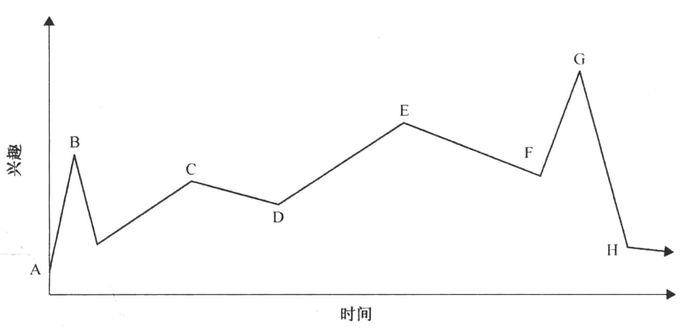

体验可以用它们的兴趣曲线评价
兴趣曲线
68号透镜：时刻
- 我的游戏中最重要的时刻有哪些？
- 我如何能够让每个时刻尽可能的强大？

A：起点不要设置太高，过度扩大会使整个体验变得无趣。
B：“钩子”，第一个吸引客人并让客人感到兴奋的时刻。
C/E：短暂的峰值
G：整个过程的最高潮
H：让兴趣有所延续
69号透镜：兴趣曲线
- 如果我画一张我的体验的兴趣曲线图，它的大致形状是如何的？
- 它有钩子吗？
- 它是否拥有逐渐提升的兴趣并由阶段性的休息间隔开？
- 它是否拥有一个比其他一切都更有趣的一个大结局？
- 什么改变会给我一条更好的兴趣曲线？
- 我的兴趣曲线是否拥有一个碎片化的组织？它应该存在吗？
- 我关于兴趣曲线的直觉是否符合我观察到的玩家的兴趣？如果我让试玩人员画一条兴趣曲线，它看上去是什么样子的呢？
兴趣是由什么组成的
1. 内在兴趣
戏剧是期待与不确定的混合体。 ————威廉 阿彻
70号透镜：内部兴趣
- 我的游戏的哪些方面会立刻吸引玩家的兴趣？
- 我的游戏会让玩家做或看一些他们从来没见过或做过的东西吗？
- 我的游戏会吸引哪些基础本能？它是否可以吸引更多的基础本能呢？
- 我的游戏会吸引哪些更高层次的本能？它是否可以吸引更多的高层次本能呢？
- 戏剧性变化和对这种变化的期待是否会在我的游戏中发生？怎样可以让它变得更具戏剧性？
2. 演出的诗歌艺术
71号透镜：美丽
- 我的游戏是由哪些元素组成的？每个元素如何能变得更加美丽？
- 一些东西它们本身并不美丽，但是组合起来就很漂亮。我的游戏中的元素如何才能编绘得既富有诗意又美丽？
- 在我的游戏的上下文中，美丽意味着什么？
3. 投影
讲故事的艺术中的一个重要部分就是创造那种能让客人轻易代入的角色。
人类存在于两个世界：面向外界的感知世界和面向内心的想象世界。
每个娱乐体验创建它在想象空间内自己的小世界，这个世界不需要真实，但它必须要内部连贯。
互动娱乐拥有一个更明显的优势，客人可以是主要角色。……不像基于故事的娱乐中的故事世界只存在客人的想象中，互动娱乐通过允许客人直接控制和改变故事世界来创造出感知与想象之间重要的重叠。这就是为什么电子游戏可以展现几乎没有内部兴趣或诗意的事件而又仍然对客人有吸引力的原因。
72号透镜：投影
- 我的游戏中有什么可以让玩家和自身联系起来的东西？除此以外我还可以添加什么？
- 我的游戏中有什么可以抓住玩家想象力的东西？除此以外我还可以添加什么？
- 游戏中有什么地方是玩家一直希望前往的？
- 玩家是否可以成为一个他们一直想象自己能够成为的人物？
- 游戏中是否还有别的玩家会感兴趣遇见（或者监视）的人物？
- 玩家是否可以做那些他们在现实生活中想做而不能做的事？
- 游戏是否有一个玩家一旦开始做就很难停下的行动？